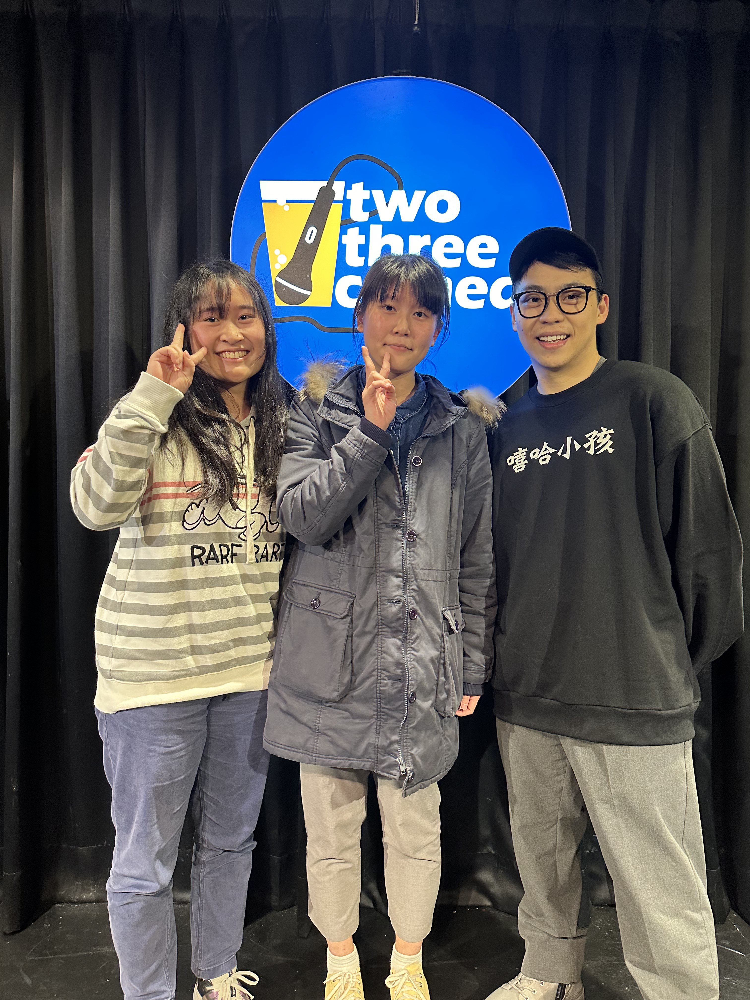
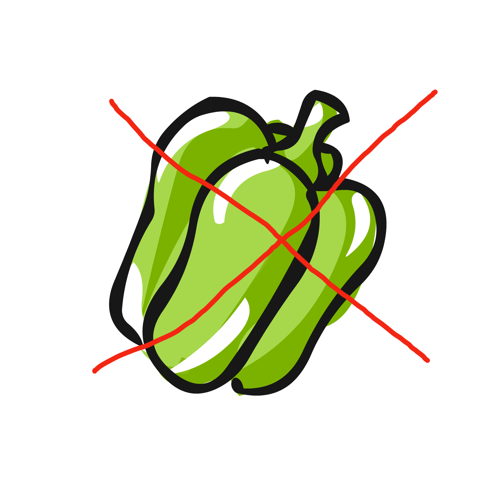
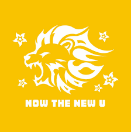
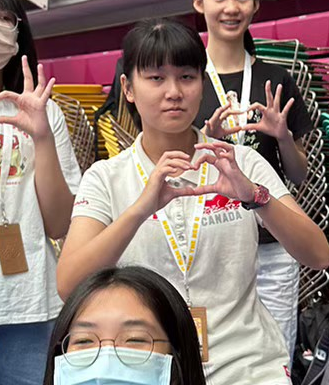
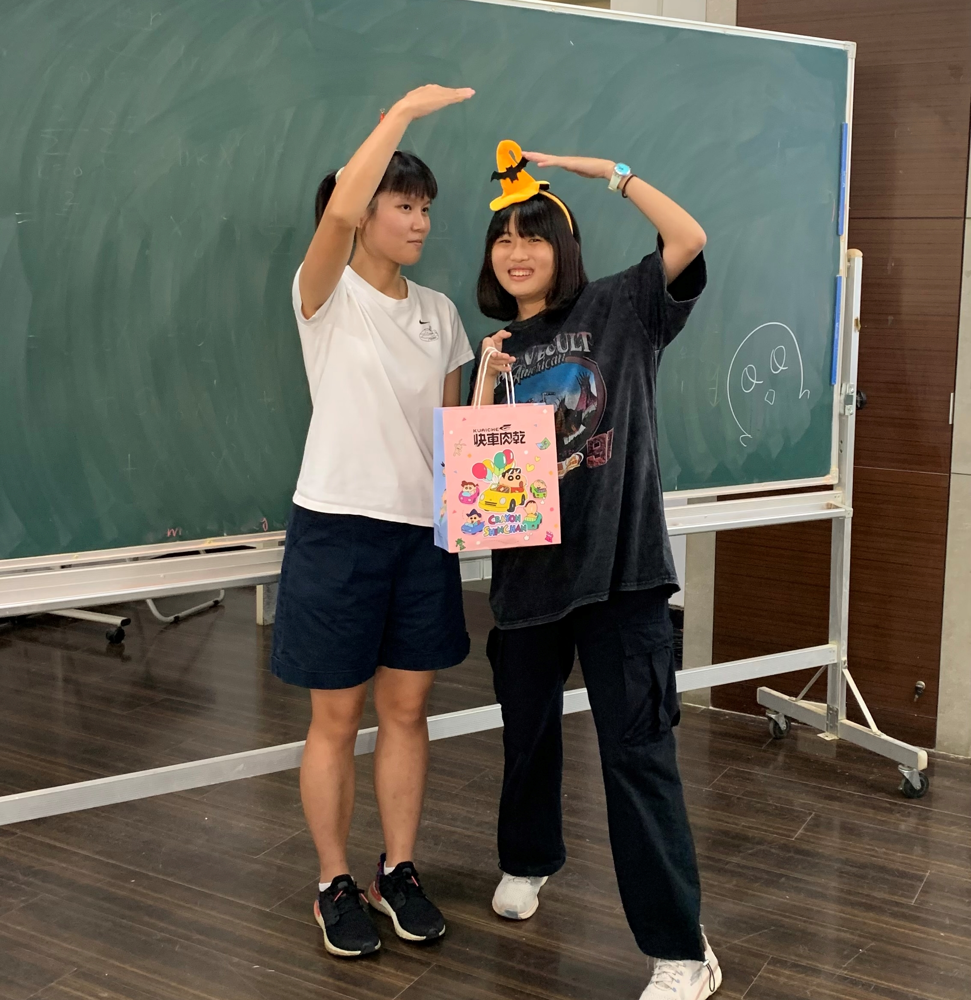
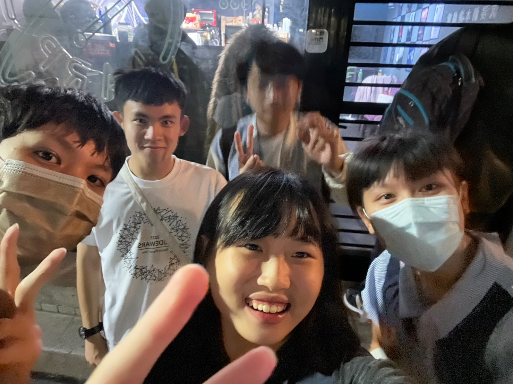
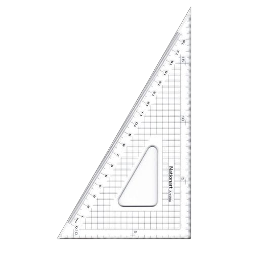
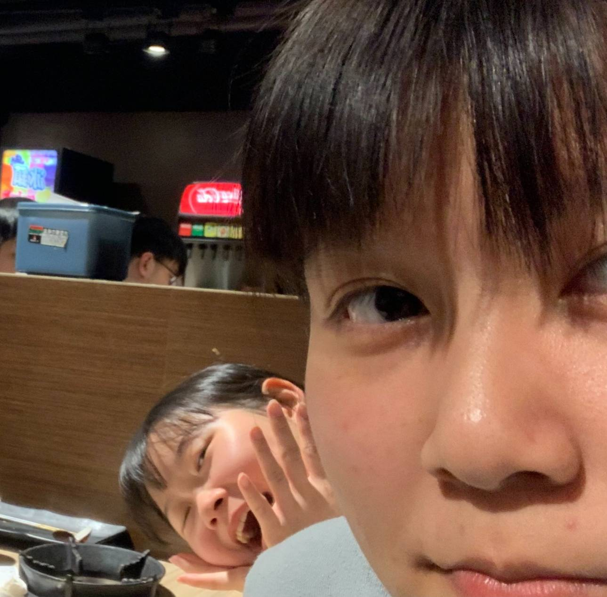

這是陳育渝
aka tarocle
Yuyu 柯粉大將軍
賀瓏迷妹
民眾黨黨員

他原本想要念清交
結果分數只能來台師大


開學前一個禮拜
Yuyu參加了伯樂大學堂


在伯樂大學堂第一次遇到了料魚


開學後，微積分的課認識
一個神奇的同學...
沒錯！他就是吳俊廷！

Yuyu開始叫人家無菌蛋（？
在程設出第一次作業的TA Hour...
他遇到並認識了兩位助教
沒錯，就是Takala和爺爺
當然，Yuyu中文不好又調皮
究竟是ㄓㄨㄥˋ還是ㄔㄨㄥˊ呢
在程設作業一的死線前幾天
Yuyu卡在第五題的輸入卡好久
Yuyu在微積分的下課認識了一個同學
並教他scanf("\n")
沒錯就是這禮拜爆肝寫這個網頁的
可憐小孩Andy Lu

在一次和吳俊廷還有Andy Lu吃飯時
Yuyu認識了和他們兩個打比賽的隊友
沒錯！就是吳振榮
人稱反陳育渝黑粉
Yuyu與幾個好朋友的
大學生活就這樣繼續著
當然也有奇怪的好朋友
例如歐姆巴的主人之類的（？
Yuyu的生日也不知不覺地到來
大家都很開心的準備著
祝：Yuyu生日快樂！
還有嫂嫂室友的祝福哦！
在宿舍遇到的三角函數室友


還有系羽大頭的祝福哦！
總在神秘花園遇到的大頭